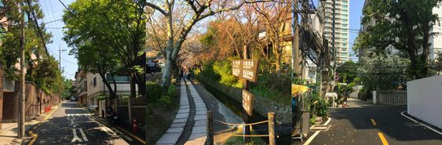
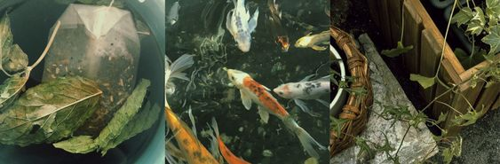

OH, HELLO THERE
in a rapidly evolving world full of seemingly endless despair, there is wonder and beauty if you dare look hard enough. except, you really don't need to look hard. there is magic everywhere, even in the mundane. in children's laughter, a cup of coffee, in watching cars whizz by. every day we are so busy with everything we must do, all the deadlines we must meet, all the appointments we must catch, that we forget to slow down. life goes by so fast. this page is a depiction of the world through the eyes of a 20-year old college student, hoping to convince you there is a lot of beauty in this life.
 WHAT IS THERE?
what is there in this world?
- there is ART
- there is HOPE
- there is LOVE
ABOUT.
frequently asked questions ~
- what is the meaning of life?
- why was this site created?
- how can i contribute?
- about the author . . .
- here is a link to a site about the author and what they
enjoy!
REMINDERS.
- everyone makes mistakes
- be gentle with yourself and others
- don't take things too seriously!